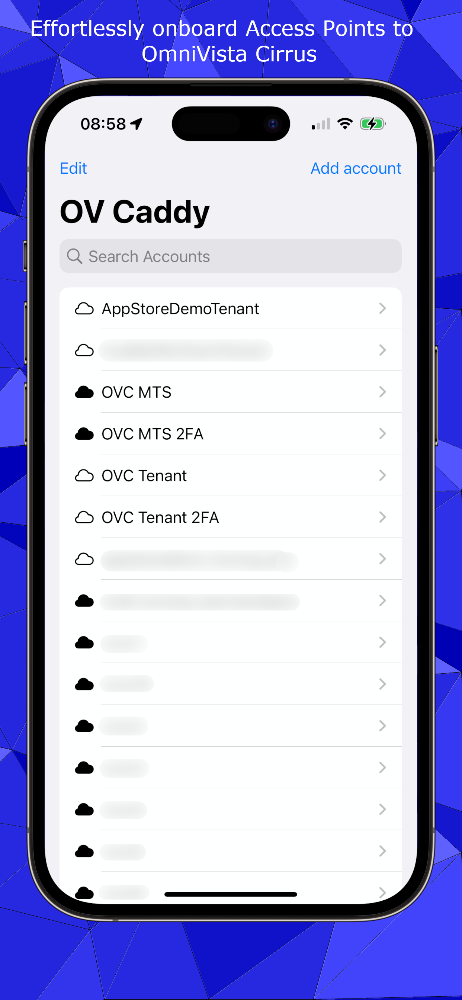
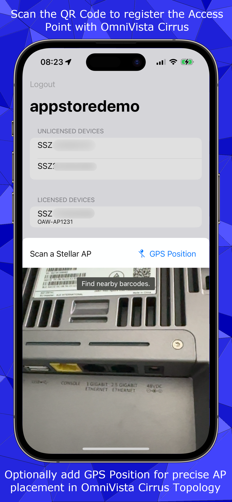
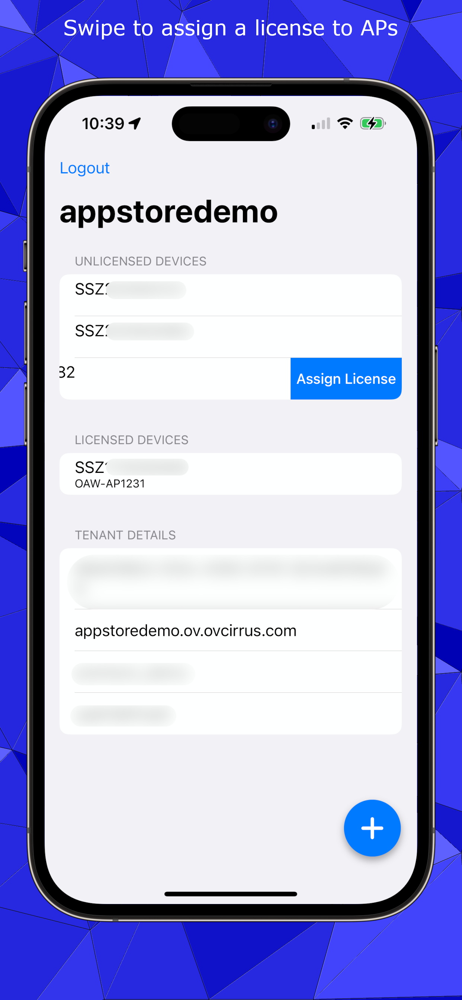

About OV Caddy
OV Caddy helps with onboarding your OmniAccess Stellar Wireless Access Points (AP) to OmniVista Cirrus 4.x. You can optionally include the GPS location (enabled in QR Code scan view via button) when installing the Stellar Wireless AP to benefit of a precise installation location on customer premises. OV Caddy supports the onboarding of OmniSwitch & OmniAccess Stellar Wireless Access Points (AP) to OmniVista Cirrus 10.
Features/Enhancements in Release v1.2 (January 2025)
- Offer One-Time-Password (OTP) coming in via eMail from Apple Mail app (doesn't work with e.g. Outlook for iPhone due to Apple privacy requirements) -> Thanks for the idea, Chris @ Huber & Feneberg :)
- Changed keyboard to numeric pad for OVC10 2FA input
- Handle situation where accounts in OV Caddy were inaccessible while an extension of the trial-period was requested
- Notification when change of password in OmniVista Cirrus 10 is required (needs to be done in browser)
- Display an alert when username/password is incorrect
- Changes to ensure compatibility with upcoming (meanwhile released) OmniVista Cirrus 10.4.3 release
- Edit existing accounts (allows swipe-through)
- SwipeAction to delete existing accounts (no warning message)
- Migrate local accounts from UserDefaults to iCloud storage for simple migration to new iPhone (tried this today, worked like a charm 🥰)
Features in Release v1.1 (2024)
- Effortlessly add Alcatel-Lucent Enterprise OmniSwitch & OmniAccess Stellar Wireless Access Points to OmniVista Cirrus (10.x) with a simple QR code scan
- Manage your OmniVista Cirrus 10.x organisations directly
- Conveniently manage multiple customer organisations via OmniVista Cirrus 10.x Managed Service Provider (MSP) management
- Securely access organisation or MSP with two-factor authentication (2FA/OTP or eMail) for direct organisations and MSP-managed organisations
- Review status of onboarded OmniSwitch & Stellar Wireless devices in OmniVista Cirrus 10
- List the currently active wireless clients in OmniVista Cirrus 10
- List the currently active wired clients (attached to UNP ports) in OmniVista Cirrus 10
- Learn details about your subscription to OmniVista Cirrus 10
Screenshots for OmniVista Cirrus 10
- To be added later
Roadmap
- The roadmap solely depends on user feedback. Currently there was no such feedback and thus development is done at my discretion.
Features in Release v1.0 (2023)
- Effortlessly add Alcatel-Lucent Enterprise OmniAccess Stellar Wireless Access Points to OmniVista Cirrus (4.x) with a simple QR code scan
- Manage your OmniVista Cirrus 4.x tenants directly
- Conveniently manage multiple customer tenants via OmniVista Cirrus 4.x Multi-Tenancy-System (MTS) management
- Securely access via app with two-factor authentication (2FA) for direct and multi-tenancy system managed tenants
- Register the Access Point at their exact GPS location (optionally, enabled by user in QR scan view)
- Light/Dark mode
Screenshots for OmniVista Cirrus 4.x
  Download

Frequently Asked Questions (FAQ)
- Alert that 2FA is not correctly activated (setup)
- Please complete your 2FA-setup for OmniVista Cirrus via the browser first
Privacy
OV Caddy fully respects your privacy. OmniVista Cirrus accounts need to be pre-existing before use, no ads are shown and no usage data is collected. For further information you can take a look at the privacy policy.